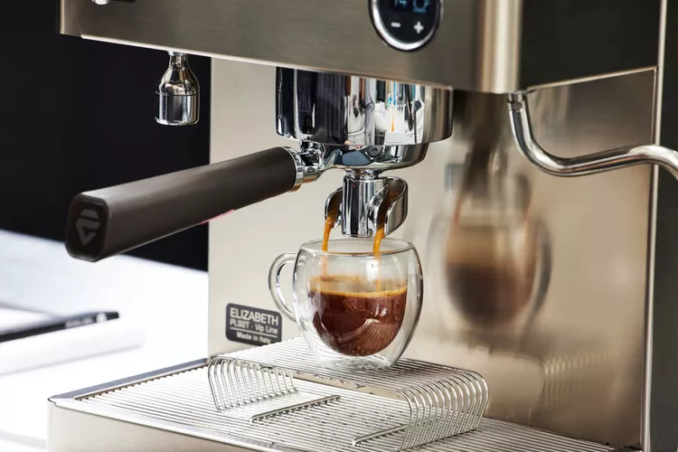
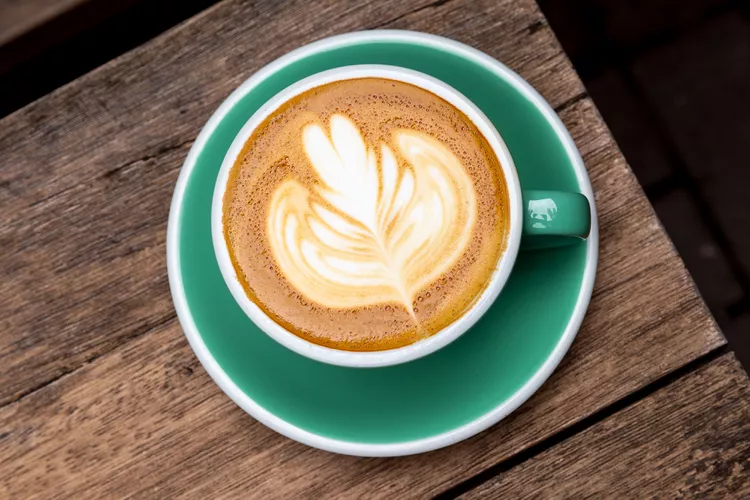
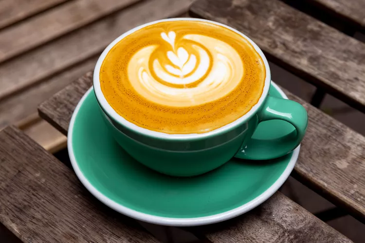
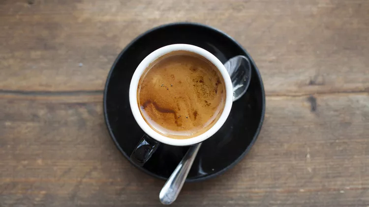

Kávé italok
Espresso
Egy erős, koncentrált kávé kis csészében, amely a legtöbb kávéital alapját képezi.
Cappuccino
Espresso, gőzölt tej és tejhab egyenlő arányú keveréke, gyakran reggeli ital.
Latte
Tejesebb kávéital, amely espresso és nagy mennyiségű gőzölt tej keverékéből készül, tetején vékony tejhabbal.
Macchiato
Espresso, amit egy kevés tejhab "megjelöl", így egy erőteljes, de lágyabb ízvilágot ad.
Mocha
Csokoládés latte: espresso, forró csokoládé és gőzölt tej kombinációja, általában tejszínhabbal a tetején.

A kávéitalok végtelen világa
A világ kávéitalainak választéka szinte végtelen. Az espresso, cappuccino, latte és társai mellett számtalan más különleges és helyi specialitás létezik, amelyek mind saját egyedi ízvilággal és elkészítési móddal rendelkeznek. A kávékultúra folyamatosan fejlődik, így mindig érdemes nyitottnak lenni az új ízek és kombinációk kipróbálására.
A túlzott koffeinfogyasztás idegességet, álmatlanságot és szapora szívverést okozhat. Fogyassza mértékkel!
Terhes és szoptató nők, valamint gyermekek számára nem ajánlott.